History of Photo Retouching: From Pencil Scratches to Pixel Perfection – Why Your Fingers Still Beat AI in 2026
Grab your favourite coffee and settle in, because we’re about to time-travel through the glamorous, messy, and totally addictive world of photo retouching. Before there was a “Healing Brush” or an “Undo” button, people were literally carving beauty into film with knives and paint. Ready? Let’s go!
The Pre-Photoshop Era: When Retouching Was Pure Magic (and Pure Sweat)
Back in the late 1800s and early 1900s, if a portrait needed fixing, you didn’t open an app — you opened a drawer full of tiny brushes, inks, and scalpels. Photographers would scratch away unwanted spots directly on the negative with a razor-sharp blade, then delicately paint over it with watercolours or dyes.
1. Victorian Super-Productions: When Photos Became Epic Art (1850s)
Photography was brand new in 1839, and artists immediately said “hold my chemicals.”
Oscar Gustave Rejlander dropped the ultimate flex in 1857: “The Two Ways of Life” — a 30-negative monster montage showing naked figures choosing between Virtue and Vice. Prince Albert loved it so much he bought a copy (even though the nudes caused a scandal).
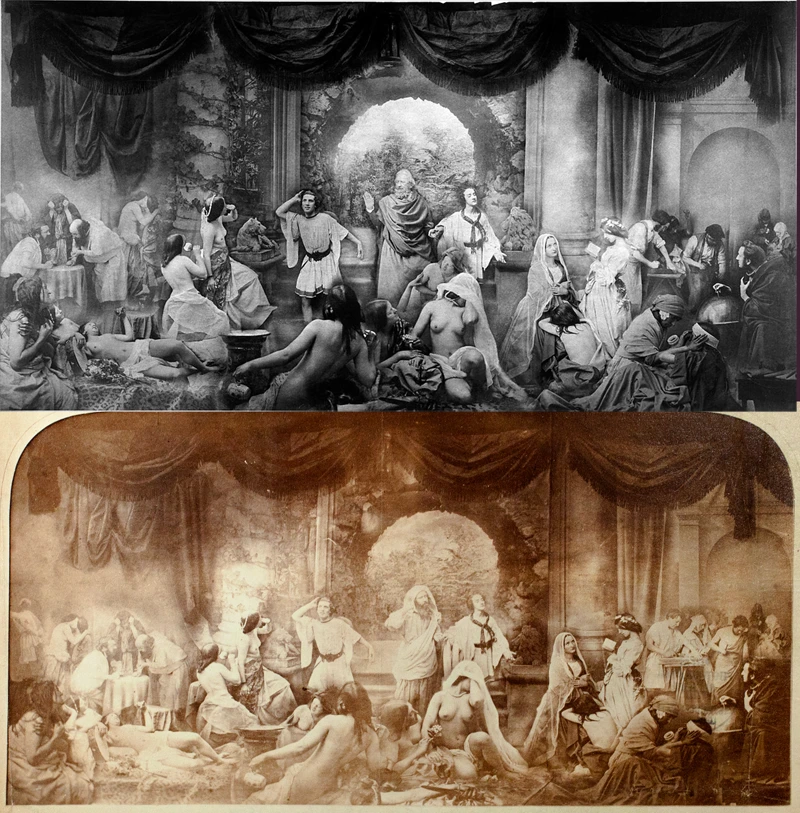
A year later Henry Peach Robinson went full soap-opera with “Fading Away” (1858) — a dying girl surrounded by grieving family. Made from five separate negatives. The public was horrified… and obsessed.
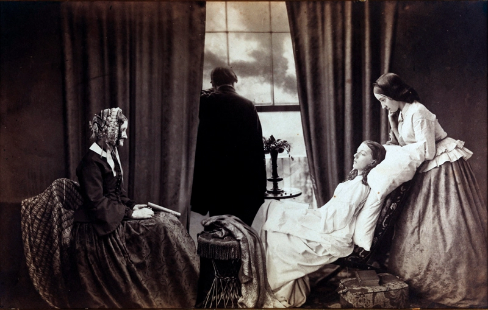
2. Early Political & Spooky Shenanigans
1860s America: someone swapped Abraham Lincoln’s head onto the body of his political rival John C. Calhoun. That Frankenstein portrait became the basis for the $5 bill. Classic deepfake before deepfakes!
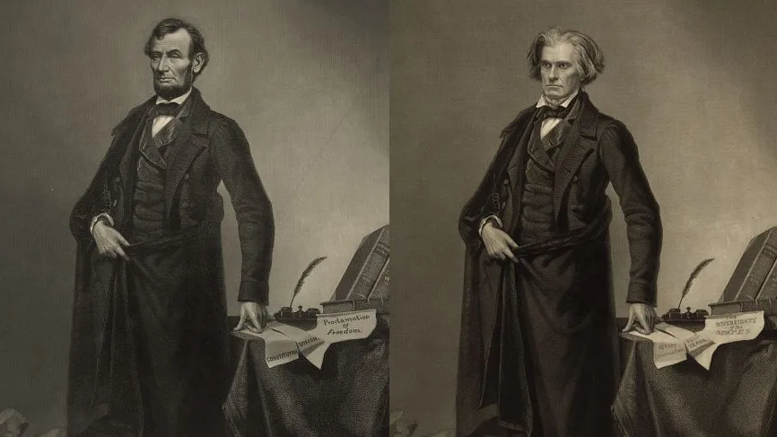
Then came the ghost hunters. William Mumler made a fortune photographing “spirits” hovering behind grieving widows. His most famous? Mary Todd Lincoln with the transparent ghost of her murdered husband. (Spoiler: double exposure + clever trickery.)
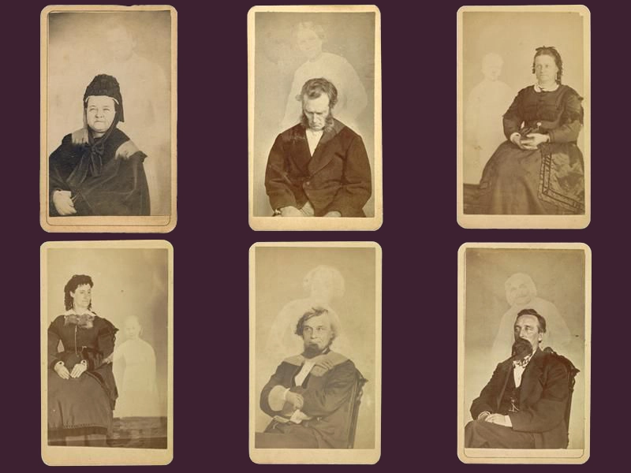
Early 20th Century: The Hilariously Over-the-Top “Tall Tale” Postcards
By the beginning of the 20th century, Americans had discovered a brilliant new form of entertainment: lying with photographs — for laughs.
Welcome to the golden age of “Tall Tale” postcards (roughly 1908–1915). The undisputed master was William H. “Dad” Martin from Ottawa, Kansas. He built a postcard empire using nothing but scissors, glue, and clever darkroom tricks — up to 10,000 ridiculous postcards per day!
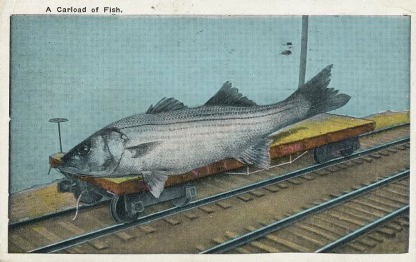
And in 1917 two British schoolgirls glued paper fairies to bushes and fooled Sir Arthur Conan Doyle into believing they were real. The two cousins, 16-year-old Elsie Wright and 10-year-old Frances Griffiths, carefully cut fairies from a children’s book, attached them to hat pins, and posed them among the flowers and bushes in their Cottingley garden.
A grieving Sir Arthur Conan Doyle, who had lost his son in the First World War and become a fervent believer in spiritualism, was completely convinced — he published the photos in The Strand Magazine and wrote the 1922 book “The Coming of the Fairies,” declaring them scientific proof that fairies existed.
The hoax remained secret for decades until 1983, when Elsie (then 82) finally confessed to using simple paper cutouts and camera tricks; Frances died in 1986 still hinting that “the fairies were real in some way.
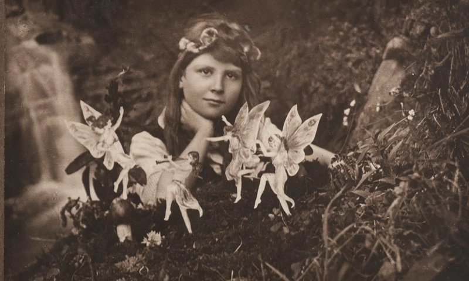
3. Stalin’s Vanishing Act & Nazi Germany: Creating the Perfect Führer
In the USSR, if you fell out of favour — poof — you were airbrushed out of history. The most famous example: Nikolai Yezhov standing next to Stalin, later completely erased.
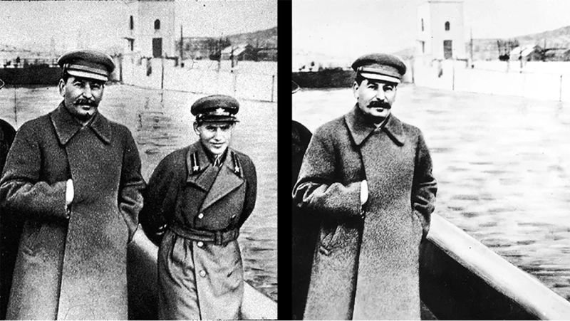
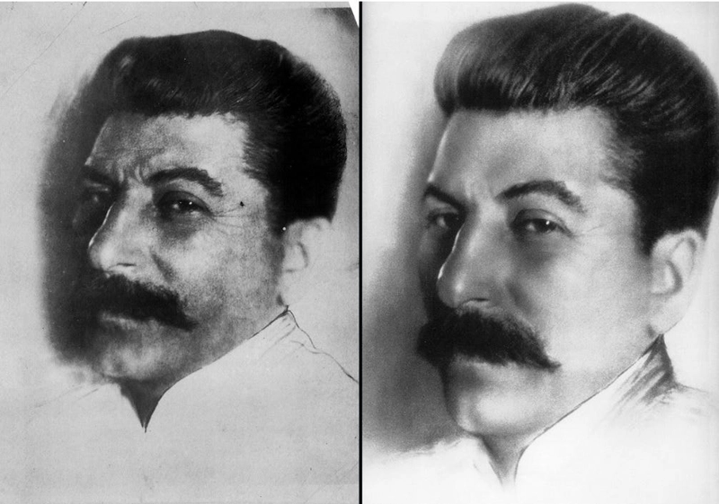
Hitler rehearsed every gesture for hours. Goebbels was later airbrushed out of photos with Leni Riefenstahl.
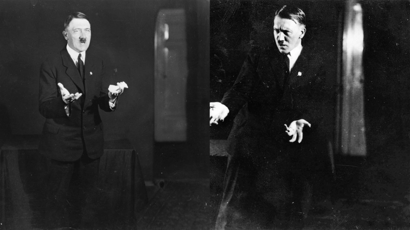
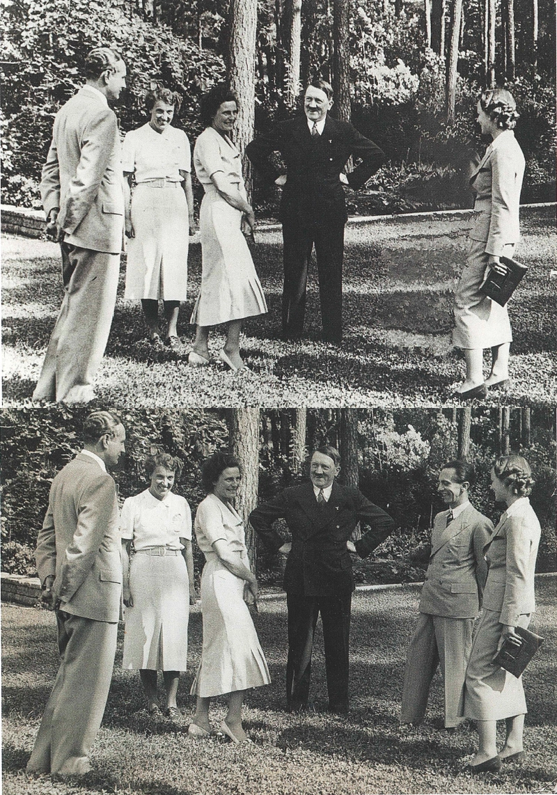
Meanwhile, John Heartfield fought back with savage anti-Nazi photomontages.
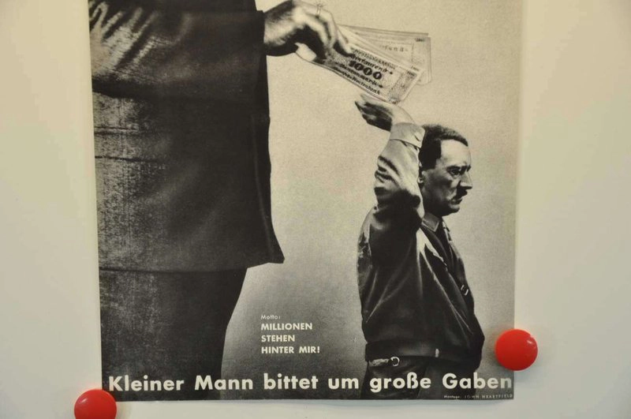
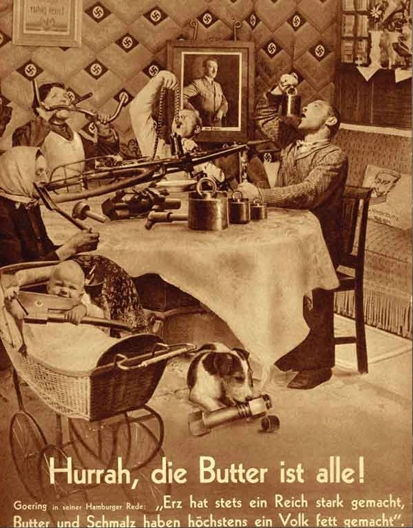
Fake Photos After 1945: The Camera Kept Lying
1945: “Raising the Flag over the Reichstag” was restaged, smoke added, and a second watch retouched out.
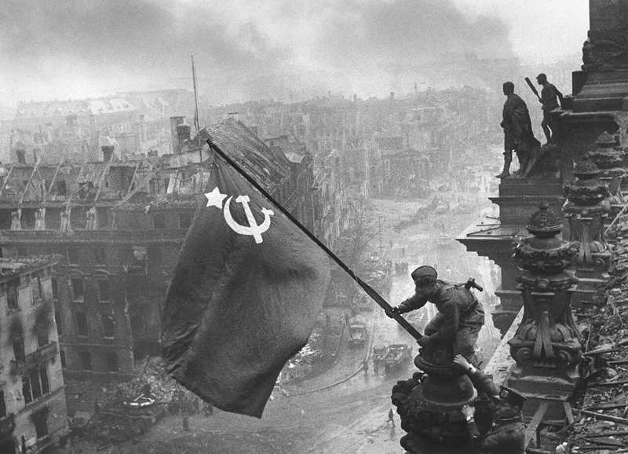
How We Got from Darkrooms to Desktops
1982: National Geographic “moved” the pyramids closer together using the early Scitex system.
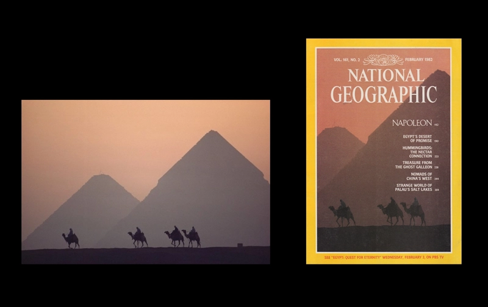
1994: TIME Magazine darkened O.J. Simpson’s mugshot, sparking a racism scandal.
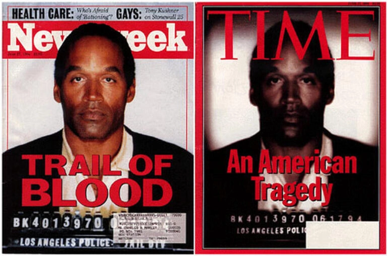
Then in 1990 Photoshop 1.0 changed everything.
Photoshop Alternatives: Yes, You Have Choices! (2026 Edition)
- GIMP – Completely free, open-source, massive plugin community
- Affinity Photo – One-time purchase (~$70), blazing fast, professional-grade
- Luminar Neo – Gorgeous AI tools, super intuitive for hobbyists
- Photopea – Free in-browser editor that opens PSD files perfectly
AI Retouching: Amazing… Until It Isn’t
AI removes acne in 0.3 seconds and swaps heads instantly, but the downsides in 2026 are clear: waxy skin, struggles with different skin tones, and that “cheap AI look” clients instantly spot.
Why the Human Hand Will Always Win (Especially for Your Brand)
There’s something magical that happens when a real person spends time on your photo. They notice the tiny sparkle in the eye, the gentle curve of a smile, the way light kisses the cheek. They add soul.
Manual photo retouching keeps the humanity. A slight freckle, natural skin texture, realistic shadows — these tiny imperfections make people feel “this is real… I can relate.” In 2026 authenticity is the ultimate luxury.
Try spending just ten extra minutes with the old-school tools. Zoom in, soften that skin by hand, add back a little texture. You’ll feel the difference. Your audience will feel it too.
Frequently Asked Questions
- What is the history of photo retouching?
- It started in the 1850s with knives, paint and multiple negatives, continued through political propaganda, exploded with Photoshop in the 1990s, and now faces the AI era.
- Is AI photo retouching better than manual?
- For speed — yes. For authentic, premium, emotionally resonant results that build trust — human fingers still win in 2026.
- What are the best Photoshop alternatives in 2026?
- Affinity Photo (best one-time buy), Luminar Neo (AI fun), GIMP (free), Photopea (browser-based).
The camera never told pure truth — it was always a tool in human hands. In 2026, when you want warm, trustworthy, unforgettable images, nothing beats the human touch.